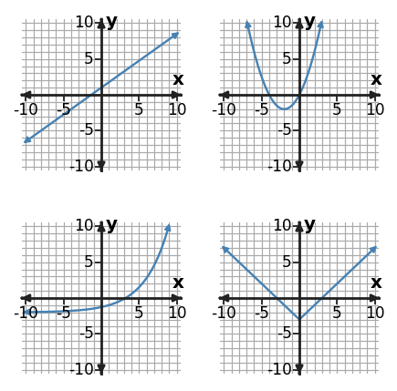

Algebra Check Your Understanding 4.1
1. The graph gallery includes one relationship with a constant rate of change. Identify its position and family, and state the visual evidence.

2. Classify $y=5(2)^x$ and name the equation feature that is strongest evidence for the family.
3. Use the graph gallery to distinguish the quadratic graph from the absolute-value graph. Name one feature that separates them.

4. A table has constant first differences of -5, while a tiny graph window looks slightly curved. Which evidence is stronger, and what family does it support?
5. The top-left and bottom-left graphs both increase. What graph feature is the strongest evidence for deciding which is linear and which is exponential?

6. An equation is $y=2(x+1)^2-4$ and a rough sketch is hard to read. Which representation gives stronger family evidence here, and what family is it?